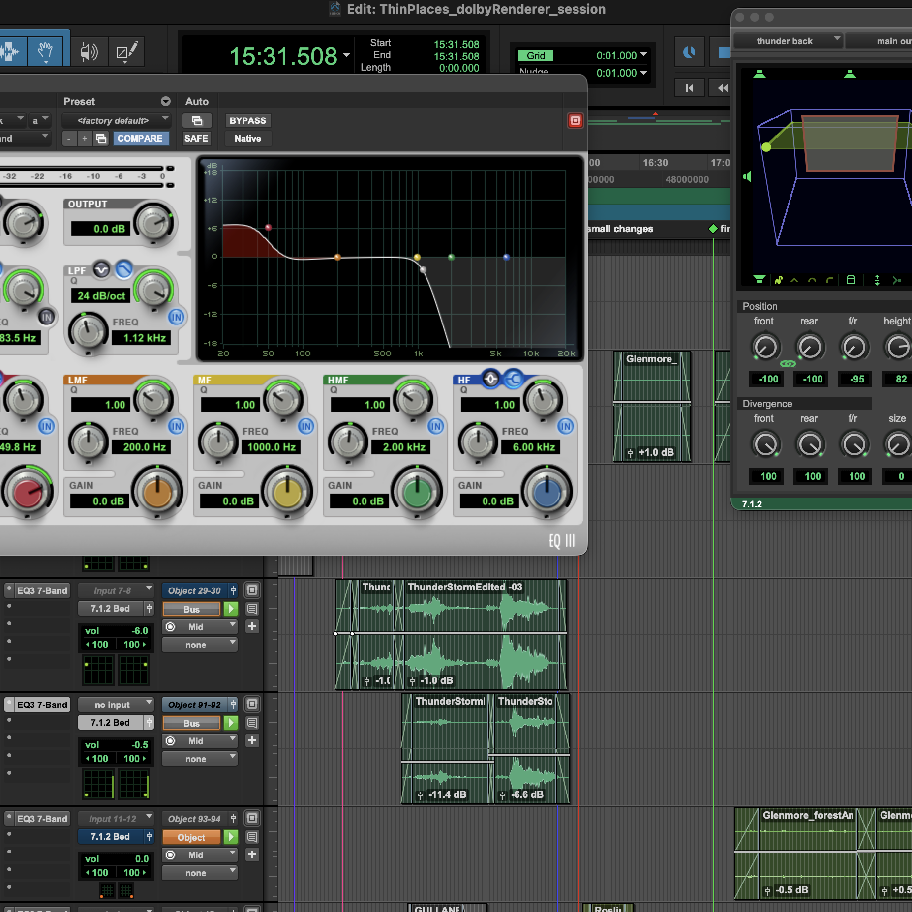

Sound Design

I use Protools and Reaper to edit and mix sound for radio, documentary and fiction films
Sound Designer for the composed documentary, Thin Places
Sound Designer for the short animation, Illuminate
Sound Designer for the short documentary, The Force of Water